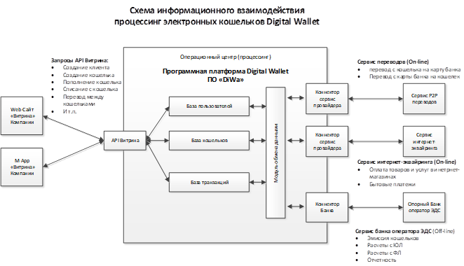

Введение
Программная платформа Digital Wallet (ПО «DiWa») – это программное обеспечение для построения систем процессинга электронных кошельков, используя которое заинтересованная компания сможет предоставить своим Клиентам полный комплекс современных высокотехнологичных услуг по проведению операций с электронными кошельками (электронными денежными средствами с использованием электронными средствами платежа) с помощью мобильного телефона и через Интернет. Пользователи процессинговой системы «DiWa» смогут управлять своими средствами на электронных кошельках, совершать платежные операции по оплате товаров и услуг в торгово-сервисных предприятиях, а также и переводы другим пользователям кошельков или банковских карт через web-интерфейс, мобильное приложение на телефоне и другими дистанционными способами круглосуточно, в удобное для них время.
Отличительной особенностью ПО «DiWa» является наличие готовых интерфейсов для подключения к компаниям – сервис-провайдерам электронной коммерции и электронных переводов, что позволяет компании в короткий срок предоставить клиентам различные каналы пополнения кошельков и использования средств с кошельков. Наличие одновременного подключения к нескольким сервис-провайдерам позволяет Компании выбрать канал пополнений и списаний с наиболее выгодными условиями. Кроме того, наличие нескольких каналов пополнений и списаний повышает надежность работы системы т.к. при отказе одного из каналов можно оперативно переключить операции на другого сервис-провайдера.
Кроме того, в комплект поставки ПО «DiWa» входит набор интерфейсов к Опорному банку, который осуществляет функции Оператора электронных денежных средств в части учета электронных кошельков и проведения операций по ним.
Структурная схема информационного взаимодействия участников процессинга DiWa показана на рисунке:

Термины и определения
Программная платформа «Digital Wallet» (ПО «DiWa») – программное обеспечение, представляющее собой совокупность следующих компонентов:
- серверное ядро, обеспечивающих ведение баз данных системы и реализацию необходимой функциональности по процессингу операций с электронными кошельками;
- внешнего API Витрина для создания клиентских интерфейсов (интернет-сайтов и приложений для мобильных устройств), взаимодействующих с серверной платформой, и предназначенного для управления процессингом электронных кошельков;
- модулей коннекторов внешних интерфейсов, обеспечивающих взаимодействие серверного ядра с внешними системами – банками, торгово-сервисными предприятиями, платежными системами, сервис провайдерами и т.п.
Компания Витрина – компания пользователь системы процессинга электронных кошельков, предоставляющая на своих интернет-сайтах или мобильных приложениях (mApp) своим клиентам физическим и юридическим лицам возможность создавать и пополнять электронные кошельки денежными средствами, проводить с их использованием различные операции и выводить денежные средства с кошелков.
Сайт – составное произведение, представляющее собой совокупность информации, текстов, графических элементов, дизайна, изображений, фото и видеоматериалов, и иных результатов интеллектуальной деятельности, а также программ для ЭВМ, содержащихся в информационной системе, обеспечивающей доступность такой информации в сети Интернет по сетевому адресу Компании Витрины.
Пользователь – Физическое лицо, зарегистрированное на Сайте и дееспособное в соответствии с законом.
Личный кабинет – Совокупность защищенных страниц Сайта, созданных в результате регистрации Пользователя, и доступных Пользователю при условии ввода уникальных учетных данных – логина и пароля. В Личном кабинете Пользователь может вносить и редактировать информацию о себе, получать сообщения от других Пользователей, создавать электронные документы, распоряжаться электронными денежными средствами, находящимися в Кошельке, следить за остатком и движением электронных денежных средств в Кошельке, отдавать распоряжения Оператору электронных денежных средств.
Электронная подпись – Информация в электронной форме об уникальном имени Пользователя, присоединяемая ко всем электронным документам, создаваемым в Личном кабинете.
Оператор по переводу денежных средств - организация, которая в соответствии с законодательством Российской Федерации вправе осуществлять перевод денежных средств;
Опорный банк – оператор по переводу денежных средств в рамках процессинговой системы DiWa (банк или небанковская кредитная организация).
Оператор электронных денежных средств - оператор по переводу денежных средств, осуществляющий перевод электронных денежных средств без открытия банковского счета (перевод электронных денежных средств);
Операционный центр (процессинг) - организация, обеспечивающая в рамках платежной системы для участников платежной системы и их клиентов доступ к услугам по переводу денежных средств, в том числе с использованием электронных средств платежа, а также обмен электронными сообщениями (далее - операционные услуги);
Перевод денежных средств - действия оператора по переводу денежных средств в рамках применяемых форм безналичных расчетов по предоставлению получателю средств денежных средств плательщика;
Электронные денежные средства - денежные средства, которые предварительно предоставлены одним лицом (лицом, предоставившим денежные средства) другому лицу, учитывающему информацию о размере предоставленных денежных средств без открытия банковского счета (обязанному лицу), для исполнения денежных обязательств лица, предоставившего денежные средства, перед третьими лицами и в отношении которых лицо, предоставившее денежные средства, имеет право передавать распоряжения исключительно с использованием электронных средств платежа.
Электронное средство платежа - средство и (или) способ, позволяющие клиенту оператора по переводу денежных средств составлять, удостоверять и передавать распоряжения в целях осуществления перевода денежных средств в рамках применяемых форм безналичных расчетов с использованием информационно-коммуникационных технологий, электронных носителей информации, в том числе платежных карт, а также иных технических устройств;
Электронный кошелек DW – электронное средство платежа в рамках процессинговой системы DiWa.
Сервис-провайдер – компания, предоставляющая услуги по пополнению электронных кошельков и/или списанию средств с них в адрес торгово-сервисных предприятий (ТСП) в оплату предоставляемых ТСП товаров и услуг.
Сценарий работы системы для микрокредитования P2B
- Физическое лицо, которое желает участвовать в системе в качестве Кредитора, регистрируется на сайте МФО Компании Витрины (далее – Витрины).
- После регистрации Кредитор получает:
- a. учетную запись в системе Витрины (на основе стандартной процедуры регистрации Компании);
- b. логин/пароль для входа в личный кабинет Витрины;
- c. учетную запись в системе процессинга DiWa, привязанную к учетной записи в системе Витрины;
- d. электронные кошельки для размещения денежных средств, привязанные к Кредитору.
- Пополнение кошелька Кредитора в системе возможно несколькими способами:
- a. Банковским переводом. Чтобы разместить деньги в кошельке системы Витрины, Кредитор со счета в своем банке переводит нужную сумму на свой электронный кошелек в системе.
- b. Переводом без открытия банковского счета через системы денежных переводов Золотая Корона, CONTACT и т.п..
- c. Прямым пополнением с банковской карты на сайте МФО
- d. Через терминалы приема платежей
- После пополнения кошелька Кредитор получает возможность:
- a. выбрать из списка Займы, которые он хочет прокредитовать со своего кошелька
- b. оставить системе поручение на подбор Займов.
- После определения Займов, которые будут выданы с использованием средств Кредитора денежные средства в необходимом объеме списываются с кошелька Кредитора и перечисляются на кошелек Заемщика.
- Учет договоров займов в разрезе Кредиторов и Заемщиков ведется в учетной системе Компании Витрины.
- Получение денежных средств и доходов от Заемщиков при погашении займов производится путем списания средств с электронных кошельков Заемщиков и перечисления их на кошельки Кредиторов.
- Вывод средств с кошельков возможен:
- a. Прямым пополнением банковской карты Кредитора на сайте системы с его кошелька
- b. Переводом на банковский счет Кредитора с его кошелька
Описание методов
Формат запроса
Запросы осуществляются посредством протокола HTTP 1.1 с использованием SSL (HTTPS)
Входная точка:
https://diwa.online/api/<имя_метода>
Требования безопасности:
- Все сетевые взаимодействия производятся только по HTTPS.
- Приложение должно проверять корректность SSL-сертификата сервера. Если SSL-сертификат не прошел проверку, необходимо немедленно прекратить сессию, чтобы не допустить утечку данных авторизации.
- Не храните токен авторизации в открытом виде, в том числе в виде cookies.
- Никогда не используйте токен авторизации в параметрах запросов (GET, POST, и пр.).
Для передачи параметров запроса используется следующий формат:
- каждый параметр указывается парой ключ/значение в виде параметра POST-запроса;
- MIME-тип:
application/x-www-form-urlencoded; - Accept:
application/json; - кодировка символов: UTF-8.
Работа с клиентами
Создание клиента
curl 'https://diwa.online/api/wallets/createClient'
-H 'Authorization: Bearer YOUR-API-TOKEN'
-H 'Content-type: application/json'
-H 'Accept: application/json'
--data '{"userId": 1, "authorized": false, "notifyType": "M", "notifyPeriod": "MONTH"}'
<?php
$url = 'https://diwa.online/api/wallets/createClient';
$headers = [
'Authorization: Bearer YOUR-API-TOKEN',
'Content-Type: application/json; charset=utf-8',
'Accept: application/json',
];
$data = [
'userId' => 1,
'authorized' => false,
'notifyType' => 'M',
'notifyPeriod' => 'MONTH',
];
$ch = curl_init($url);
curl_setopt_array($ch, [
CURLOPT_HTTPHEADER => $headers,
CURLOPT_RETURNTRANSFER => true,
CURLOPT_POST => true,
CURLOPT_POSTFIELDS => json_encode($data),
]);
$result = curl_exec($ch);
$response = json_decode($result);
import requests
url = "https://diwa.online/api/wallets/createClient"
headers = {
"Authorization": "Bearer YOUR-API-TOKEN",
"Content-Type": "application/json; charset=utf-8",
"Accept": "application/json; charset=utf-8"
}
data = {
"userId": 1,
"authorized": false,
"notifyType": "M",
"notifyPeriod": "MONTH"
}
result = requests.post(url, headers=headers, json=data)
response = result.json()
Возвращает:
123
Создание записи в таблице клиентов процессинга кошельков DiWa. Вызывается по одному разу для каждого пользователя. В случае повторного вызова возвращает ID ранее созданного клиента.
Запрос
GET https://diwa.online/api/wallets/createClient
Параметры запроса
| Параметр | Тип | Обязательный | По умолчанию | Описание |
|---|---|---|---|---|
| userId | integer | да | - | Ссылка на пользователя в системе Витрины |
| authorized | boolean | да | - | Признак «Персонифицирован» |
| notifyType | string | да | - | Тип уведомления, например M |
| notifyPeriod | string | да | - | Период уведомления, например MONTH |
Ответ
В ответ вы получите ID клиента.
Типы уведомлений
| Тип | Значение |
|---|---|
| M | почта |
| P | СМС |
| MP | почта и СМС |
| N | не рассылать |
Период уведомлений
| Период | Значение |
|---|---|
| INSTANT | моментально |
| DAY | ежедневно |
| WEEK | еженедельно |
| MONTH | ежемесячно |
Получить ID пользователя
curl 'https://diwa.online/api/wallets/getClientId/1'
-H 'Authorization: Bearer YOUR-API-TOKEN'
-H 'Accept: application/json'
<?php
$userId = 1;
$url = 'https://diwa.online/api/wallets/getClientId/' . $userId;
$headers = [
'Authorization: Bearer YOUR-API-TOKEN',
'Accept: application/json',
];
$ch = curl_init($url);
curl_setopt_array($ch, [
CURLOPT_HTTPHEADER => $headers,
CURLOPT_RETURNTRANSFER => true,
]);
$result = curl_exec($ch);
$response = json_decode($result);
import requests
userId = 1
url = "https://diwa.online/api/wallets/createClient/{}".format(userId)
headers = {
"Authorization": "Bearer YOUR-API-TOKEN",
"Accept": "application/json; charset=utf-8"
}
result = requests.get(url, headers=headers)
response = result.json()
Возвращает:
123
Возвращает ID пользователя.
Запрос
GET https://diwa.online/api/wallets/getClientId/<userId>
Параметры URL
| Параметр | Описание |
|---|---|
| userId | ссылка на пользователя в системе Компании Витрины |
Ошибки
Список ошибок, возвращаемых API:
| Код | Значение |
|---|---|
| 400 | Bad Request -- Запрос сформирован неверно. |
| 401 | Unauthorized -- API-ключ не указан или невалидный. |
| 403 | Forbidden -- Доступ запрещен. |
| 404 | Not Found -- Ресурс не найден. |
| 405 | Method Not Allowed -- Неверный HTTP-метод. |
| 422 | Unprocessible Entity -- Параметры запроса содержат ошибки. |
| 429 | Too Many Requests -- Слишком много запросов. |
| 500 | Internal Server Error -- Внутренняя ошибка сервера. Повторите попытку. |
| 503 | Service Unavailable -- Сервис недоступен. Повторите попытку. |